Inspiration board
Three kinds of existing work feed the look: chips that already resemble cities, logic built from things other than wires, and voxel games whose style could carry it.
Chips already look like cities

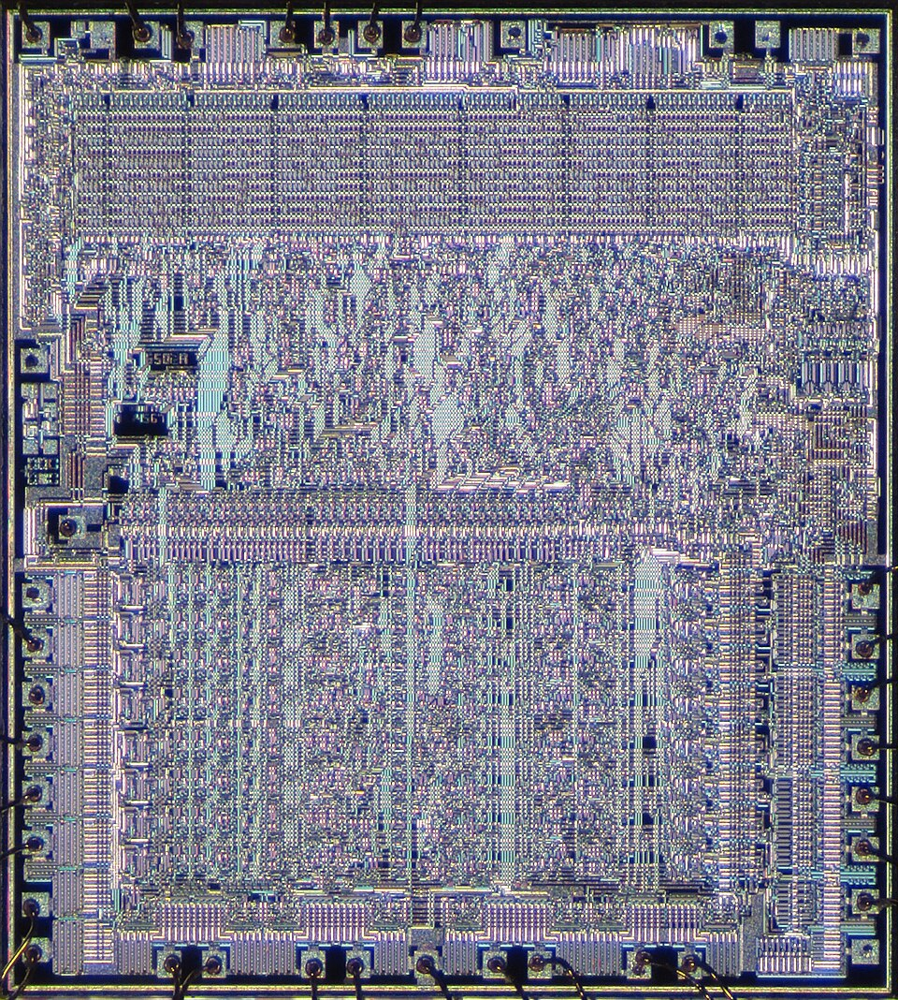


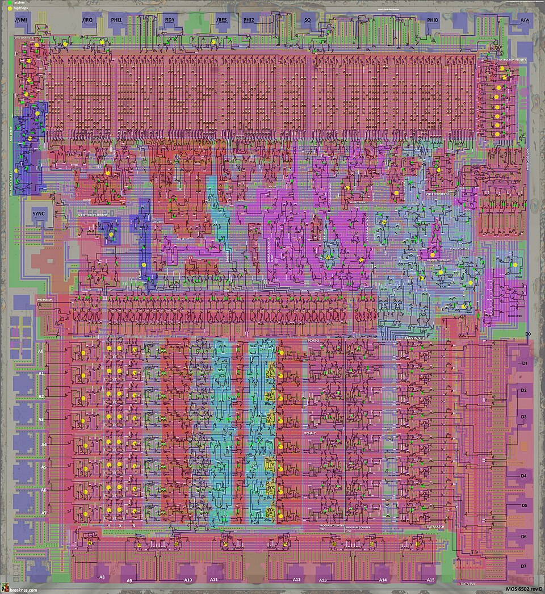


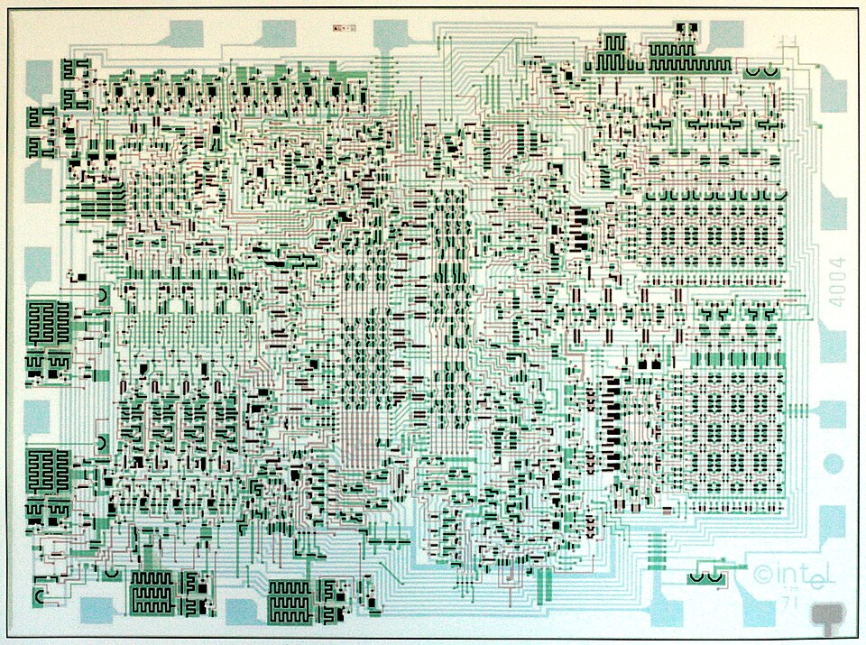
.jpg){kind=link}

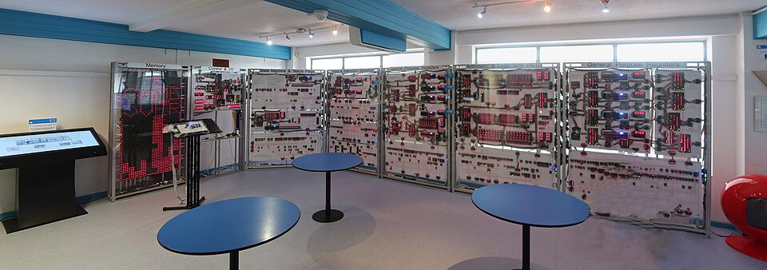
.jpg){kind=link}

Logic built from other things


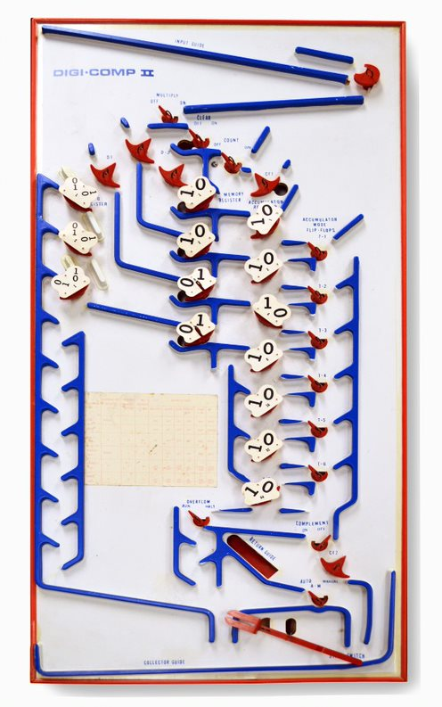


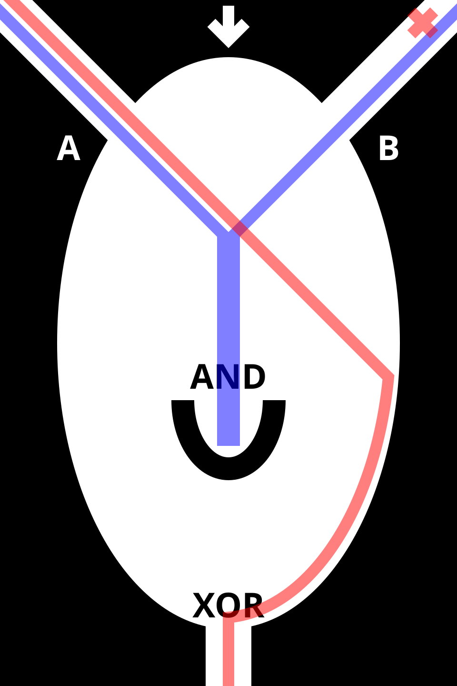

Voxel looks


Voxel artists share a few habits worth keeping. They use a small palette, often 16 to 32 colours per scene. Every voxel stands for one fixed real-world size. Silhouette comes before detail, soft baked shadows (ambient occlusion) give the blocks depth, glowing voxels show state, and scenes are framed as dioramas. These are community habits rather than research findings.
What already exists
Two families of games come near the idea. Some teach the ladder from gates to a computer on a flat board. Others put working gates inside a world, but the world's layout serves something else.
| Project | What it is | How close to "the layout is the schematic" |
|---|---|---|
| Cities: Skylines adder (Daniel Bali, 2019) | A 4-bit adder built in the unmodded game. A powered power line is a 1, water and sewage make AND and OR gates, and a flooded power plant is the NOT. Each bit uses 9 mixed gates. One addition takes about 15 in-game months, around 20 real minutes 11,12. | Closest. The city really computes, but its layout serves the hack, not legibility. |
| Turing Complete | NAND gates up to a CPU, with custom components and a flat 2D board. A 2024 ASEE paper proposes it for digital-logic courses 4,13. | Right ladder, no city. |
| NandGame (2018, browser) | NAND, then gates, adders, memory and a CPU. Each solved level becomes a reusable part 14. | Same ladder as this idea, no space. |
| Digital Logic Sim (Sebastian Lague) | Start from a NAND and package circuits into chips, layer by layer. Open source (MIT) 15. | Ladder and encapsulation, no space. |
| Logic World (2021) | A 3D first-person logic sandbox 5. | Spatial, but a workbench rather than a city. |
| Oxygen Not Included | A colony sim with AND, OR, XOR and NOT gate buildings and a Memory Toggle, which is an SR latch 16. | Gates live in a city, but the layout serves the colony. |
| Minecraft redstone | The redstone torch is both the NOT gate and a power source. Wire carries 15 blocks, and torches and repeaters add delay. CHUNGUS 2 is an 8-bit CPU running at 1 Hz with 256 bytes of RAM 17,18. | Delay and "NOT needs power" are literal. The layout is freeform. |
| Factorio, shapez | Factorio has combinators on wire networks with one tick of delay each; shapez has a wires layer with gates 19,20. | Factory precedent, but logic is a side system. |
| Robot Odyssey (1984) | You build circuits inside robots and "burn" them into chips you can no longer see inside 21. | Encapsulation, 40 years ago. |
| CodeCity (2011) | Software drawn as a city 3. | Shows the metaphor working for code, not circuits. |
The one rule, and how the layout carries the schematic
A signal is the state of a path. A lane is lit or dark, a belt is running or stopped, a root glows or it doesn't. Anything that moves only shows a change passing through.
The buildings are symbolic, so nothing about a building's shape says what it computes. The schematic has to live in the map instead: its streets, walls, signs and colours. These conventions borrow from circuit diagrams 22, from chip layout, and from Kevin Lynch's study of how people form mental maps of cities 23.
| City element (Lynch, 1960) | Circuit concept | Rule |
|---|---|---|
| Paths | Nets and wires. A bus is a High Street. | One street is one net, and the street name is the net label. |
| Edges | Module boundaries; the supply and ground rails. | Walls mark modules, and their gateways are the ports. Supply runs along the north wall, ground along the south. |
| Districts | Modules. | One category per district: an Arithmetic quarter, an Archive quarter. |
| Nodes | Fan-out junctions, multiplexers, bus interchanges. | A plaza is the junction dot on a schematic. |
| Landmarks | Global signals and top-level inputs and outputs. | The clock tower and the ALU are visible from everywhere. City gates are the inputs and outputs. |
Twelve layout conventions
- Signals flow west to east, the way a schematic reads left to right. Any lane running back from east to west is a feedback lane with its own style (an arcade or a hedge), so storage reads as "where the roads loop back".
- Supply along the north edge, ground along the south. Every building has a tap to each.
- One driver per street. Two buildings driving the same street is an error, shown as a brawl. Don't copy Oxygen Not Included, where a whole wire network turns on if any output on it is on 24. Real logic doesn't behave like that.
- Plazas are junction dots and bridges are crossings with no connection. Avoid four-way crossroads; use two staggered T-junctions, as modern schematics do 22.
- Walls are hierarchy. Zoom out and a district collapses into one labelled block, the way Robot Odyssey burned circuits into chips 21 and Turing Complete packages custom components 4.
- Roof colour shows category; glow shows state. Reserve one glowing colour for logic 1, and never rely on red against green alone.
- Every building carries a name and an icon, on a label layer that can stay switched on.
- Footprint grows with NAND cost, one lot per NAND. Cost becomes visible without the building's shape having to encode its function.
- A bus is a boulevard with numbered lanes, least significant bit on the south side.
- The clock is a landmark with its own violet lanes branching like an H-tree to every storage building. Only storage connects to it.
- Overlays work like Cities: Skylines' info views, which recolour the whole city by one variable (it has 36) 25. Useful views here: Signal, Category, Delay (the critical path in red, like traffic) and Clock.
- A city-to-schematic slider. Sliding it morphs roofs into gate symbols and straightens streets, the way Harry Beck's Tube map dropped geography 26. This builds in "concreteness fading" (start concrete, end with the symbol) 27 and helps players translate between the two pictures 28.
Chips already look like this. Rent's rule links a block's gate count to how many connections leave it, and memory has far fewer outside connections per gate than random logic 29,30. So a RAM quarter should look like an orderly grid town and the logic quarter like a tangled old town, which is how real dies look.
One warning from map research: people store cities as nested regions, and that distorts. Many people judge Reno to be east of San Diego because Nevada is east of California 31. Players will assume buildings in the same district are wired together, so the overlay has to show the true connections across walls.
The building ladder
Five categories, from the smallest houses to whole quarters. The NAND cost is how many NAND gates each part takes in the standard construction 32,33, and it sets the building's footprint. NAND, not AND, is the cheapest house: in CMOS a NAND takes 4 transistors and an AND takes 6.
| Category | Parts (NAND cost) | Role in the city |
|---|---|---|
| Logic | NOT 1 · NAND 1 · AND 2 · OR 3 · XOR 4 | The houses. Everything else is built from these. |
| Routing | Wire · fan-out junction · buffer 2 · crossing · 2:1 mux 4 · bus | Streets and junctions: where a signal goes, and who picks. |
| Arithmetic | Half adder 5 · full adder 9 · 4-bit ripple adder 36 · 4-bit ALU ≈140 | Districts and the first landmark. |
| Storage | SR latch 2 · gated D latch 4–5 · D flip-flop 6 (edge-triggered) or 9 (master–slave) · register 10–13 per bit · 16 × 4 RAM ≈1,000 | Where roads loop back on themselves, up to a whole quarter. |
| Timing | Clock | One landmark. Only storage listens to it. |
Scale. By the researcher's estimate, a 4-bit ALU, four 4-bit registers and a 16 × 4 RAM add up to about 1,300 NAND gates. At one lot per NAND, that is a market town of about 1,300 houses. Simulating that many gates is easy. Placing and reading them by hand is not, so collapsing a finished district into one block is a core mechanic, not a nicety. (The ALU and RAM figures are estimates; the others are standard counts.)
Three themes, same map
Each theme has to answer four questions honestly, or it teaches something false:
- Where does a NOT gate's 1 come from when nothing comes in? It needs a supply.
- How does one signal feed many buildings (fan-out), and what does that cost?
- Why does a long chain take time (delay)?
- What is the clock, and who listens to it?
Gentner and Gentner found that different analogies for electricity lead people to different conclusions 34. So each theme below also names the misconception it most risks teaching, and how to head it off.
Lantern Town (medieval)
A walled market town at blue hour: stone, oak and slate, with heraldic banners. It should read like a tapestry map, orderly and quiet. Heraldry is already a standard sign system, so its colours can carry the categories.
- Limestone
base ·#D9CCB0 - Oak
base ·#6B4A2F - Slate
routing ·#4A5562 - Gules red
logic ·#B0302A - Vert green
arithmetic ·#2F7A4A - Azure
storage ·#2C5A92 - Purpure
timing ·#6E3B7A - Lantern gold
signal = 1 (only glowing colour) ·#F5B841
How it answers the four questions
- 1 and 0
- The lamps along a lane are lit (1) or dark (0). Banners on output buildings repeat the state.
- NOT's supply
- An Oil Road runs along the north wall from the Chandlery, and every building has a short tap to it. A NOT lights its lane from that tap unless its input lane is lit. Nothing unconnected can be lit, so there is no 1 from nowhere.
- Ground
- The moat along the south wall. A snuffed lane drains into it.
- Fan-out
- A lit lane can light many branches at a market cross. Each branch adds lighting time, the way delay in a real chip grows with load. Past about four branches you build a Relay Tower.
- Delay
- Lamplighters walk at a fixed pace and each building adds one tick. The critical path is the longest walk.
- Clock
- The Belfry. Only scribes (the flip-flops) act on the bell; gates react at once. Sound reaching far houses later is an honest picture of clock skew.
Building ladder
| Category | Part | NAND | Building | What it looks like |
|---|---|---|---|---|
| Logic | NOT | 1 | Contrary Watch-house | Squat round tower with one lantern cage and an oil cistern tapped to the north road. The only small building with a visible supply. |
| Logic | NAND | 1 | Burgher's House | Plain 2×2 timber-framed house with a red gable, built in rows. Cheapest and universal, so it fills the old town. |
| Logic | AND | 2 | Twin-Portcullis Gate | Gatehouse with two portcullises in series: the lane beyond is lit only if both are raised. |
| Logic | OR | 3 | Twin Postern | Two arches side by side: lit if either is. |
| Logic | XOR | 4 | Herald's Court | Hall whose roof and banner are split in two colours ("party per pale"), heraldry's sign for "the two differ". |
| Routing | Wire | — | Lantern Lane | One-voxel cobbled lane with lamp posts. The state belongs to the street. |
| Routing | Fan-out junction | — | Market Cross | Covered cross on a plaza with a fingerpost: one lane in, several out. The plaza is the junction dot. |
| Routing | Buffer | 2 | Relay Tower | Chappe-style tower with semaphore arms that re-lights a long or crowded lane (+1 tick). |
| Routing | Crossing | — | Hump Bridge | Stone bridge carrying one lane over another, with no connection. |
| Routing | 2:1 mux | 4 | Toll Bridge | Gatehouse at a fork with a pennant naming the open road. |
| Routing | Bus | — | High Street | 4- or 8-lane boulevard with numbered lane banners, bit 0 on the south side. |
| Arithmetic | Half adder | 5 | Tally House | Small counting house with two exits, Sum to the east and Carry to the north-east. |
| Arithmetic | Full adder | 9 | Exchequer House | Hall with a black-and-white chequered roof, after the medieval counting cloth. |
| Arithmetic | 4-bit ripple adder | 36 | Exchequer Row | Four houses along one street. The carry lamplighter visibly runs door to door. |
| Arithmetic | ALU | ≈140 | Guildhall | Large timber guildhall with a tower whose banners select ADD, AND, OR or XOR. |
| Storage | SR latch | 2 | Twin Watchtowers | Two towers each lit while the other is dark, joined by a westward feedback lane. |
| Storage | D flip-flop | 6–9 | Scribe's House | Narrow house with a slate at the door. Copies the door lantern into the window when the bell strikes. |
| Storage | Register (per bit) | 10–13 | Notary Row | Four to eight identical scribes on one bell lane, with a "load" pennant. |
| Storage | RAM (16 × 4) | ≈1,000 | Archive Quarter | Grid-planned quarter of chained-library houses. A Clerk of the Rolls at the gate decodes the address. |
| Timing | Clock | — | Belfry | Tallest landmark, with violet bell lanes to every scribe. |
Inspiration

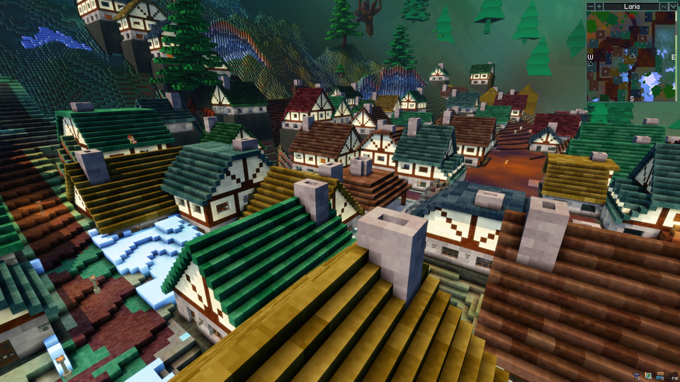


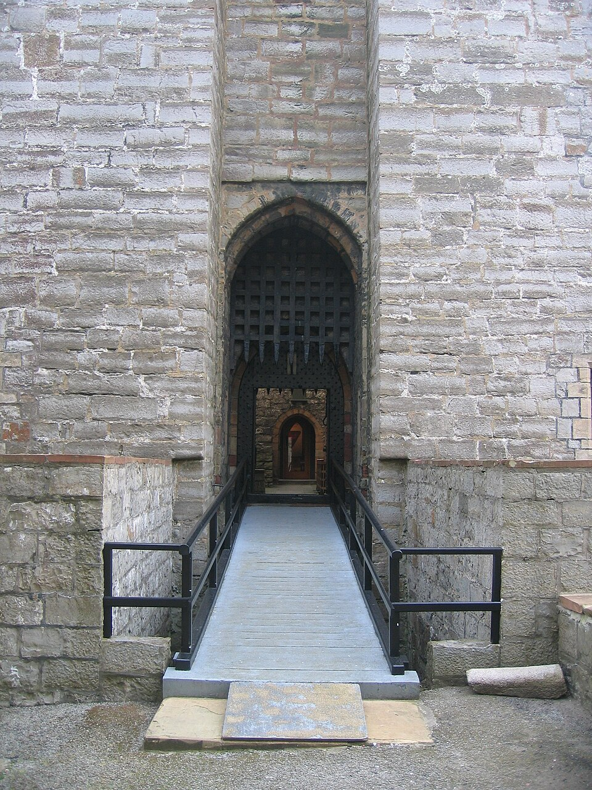


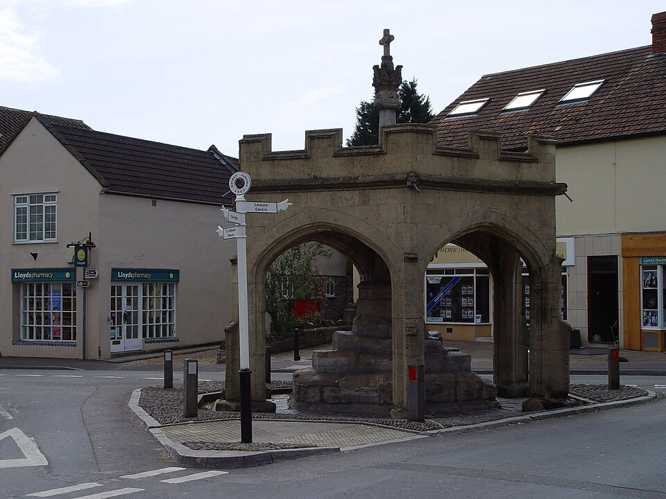
.jpg){kind=link}

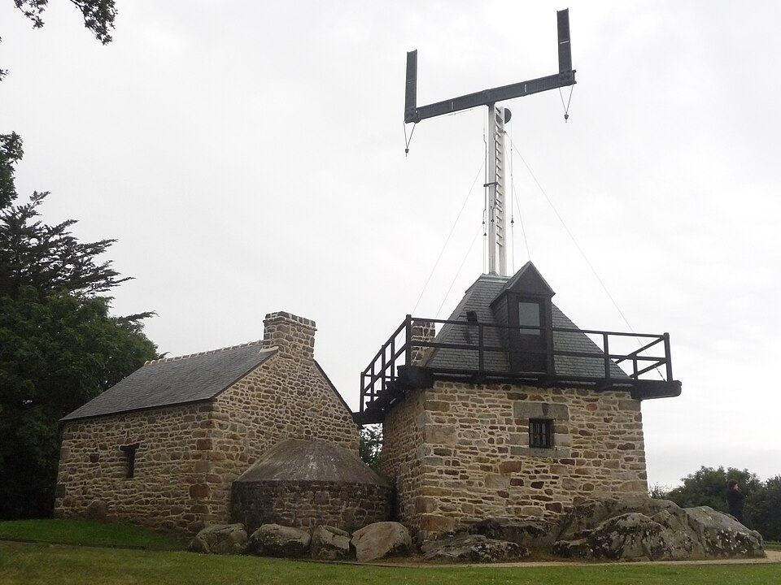


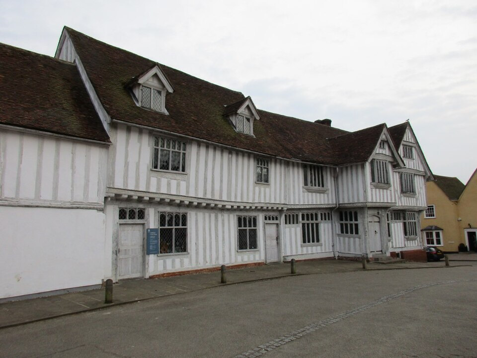


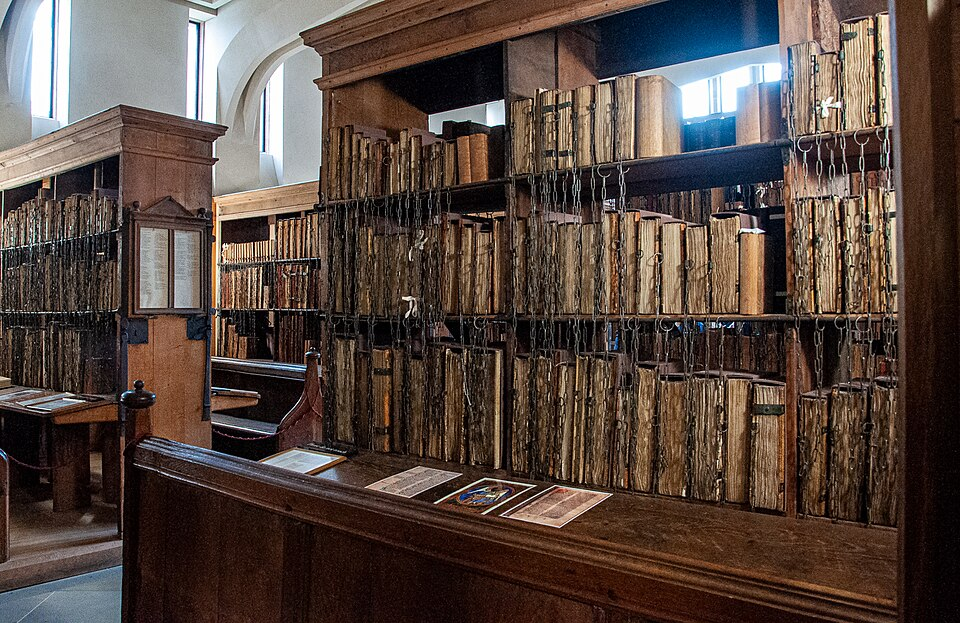


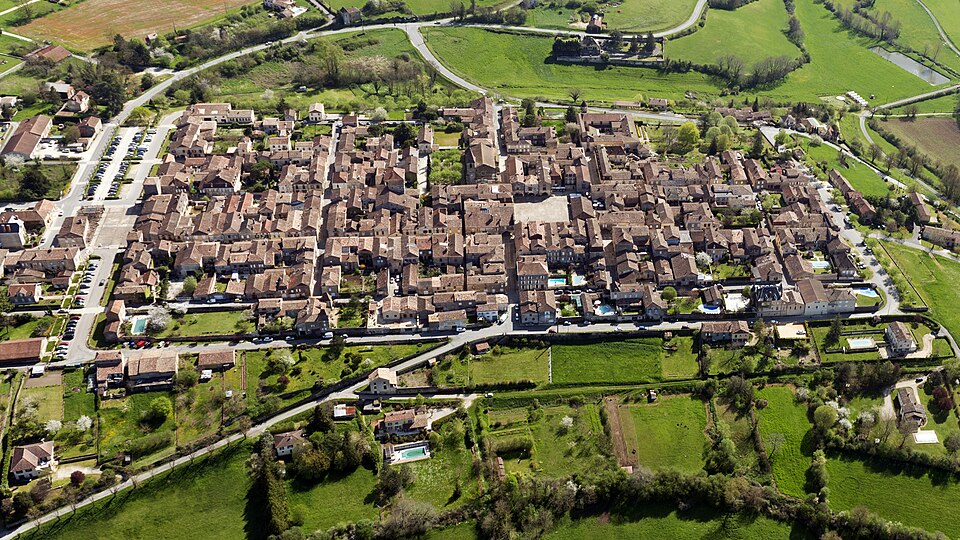


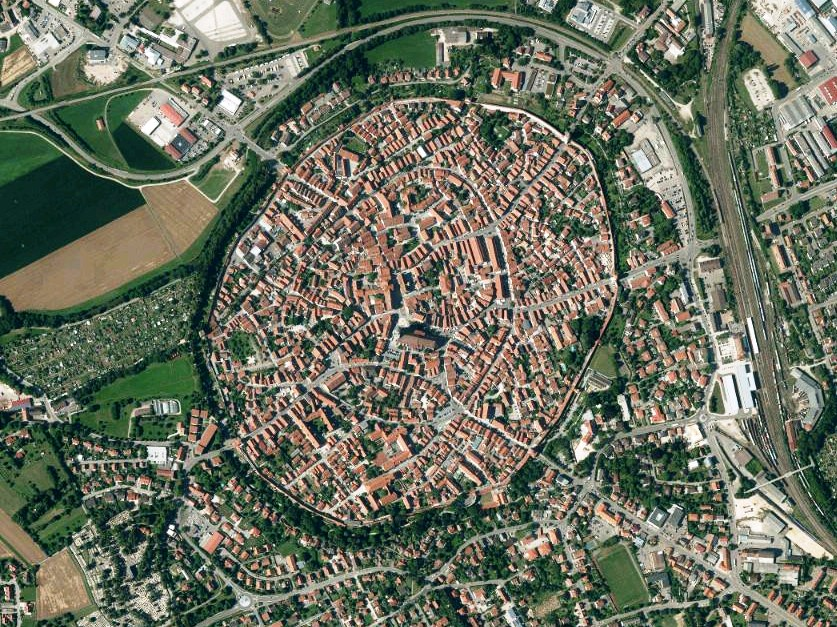


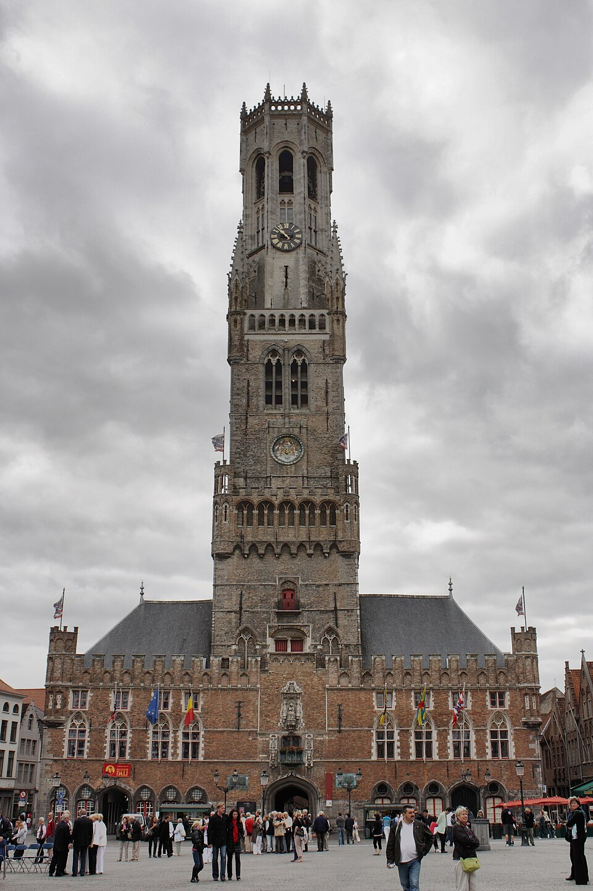


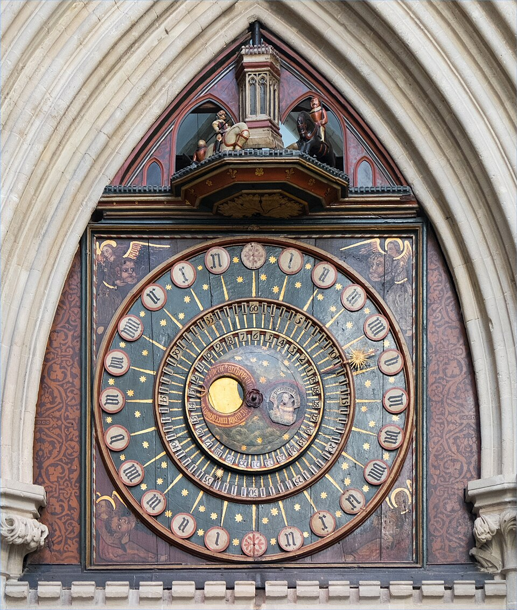

Real-world precedents
- Byzantine beacons (9th century). A chain of about 720 km to Constantinople, crossed in about an hour. Two synchronised water clocks meant each of the 12 hours stood for a different message: a clocked code 35.
- Chappe semaphore. Paris to Lille was about 230 km. The network grew to 556 stations over about 4,800 km, and the first symbol crossed 15 stations in 9 minutes 36. Relay towers re-drove the signal at each hop.
- The Exchequer (around 1180). Royal accounts were counted on a chequered cloth 37, hence the full adder's chequered roof.
- Fiction and games. In Liu Cixin's The Three-Body Problem, millions of soldiers holding flags act as a computer's gates 38. Rocky's Boots (1982) let players walk among gates and flip-flops 39.
- Evidence for gates as gateways. In Gentner and Gentner's study, people who pictured electricity as a crowd passing through gates did better on parallel resistors than people who pictured water: 93% against 63%. The groups were small, 5 to 7 people each 34.
Misconception risk: "a signal is a messenger." A messenger is in one place at a time and is gone once delivered, which makes fan-out seem impossible. A second risk is "gates wait for the bell".
Mitigation: the lane is the signal, and runners only animate changes. An early puzzle lights five houses from one lane at once. The bell reaches only scribes.
Line-Shaft Works (factory)
A works from the 1920s to 1950s at dusk: brick sheds, steel gantries, painted safety colours, humming belts and status lamps, as orderly as rows of standard cells on a chip. Industry already colour-codes its pipes by what they carry (the ASME A13.1 standard) 40.
- Brick
base ·#7E3A2C - Concrete
base ·#C2BBAE - Steel
routing ·#5B6570 - Safety orange
logic ·#D9532B - Machine green
arithmetic ·#3C8D5A - Safety blue
storage ·#2E6DB4 - Violet
timing ·#7D4C9E - Indicator amber
signal = 1 (only glowing colour) ·#FFC247
How it answers the four questions
- 1 and 0
- A belt is running with its lamp lit (1) or stopped and dark (0). Crates ride along only as a motion cue. They are never used up or counted.
- NOT's supply
- A line shaft runs from the Powerhouse along the north edge, with a belt drop to every machine. A NOT runs its output belt from the shaft unless its input belt is running, which disengages its clutch. The flooded power plant in the Cities: Skylines adder is the same idea 11.
- Ground
- A brake trench along the south edge.
- Fan-out
- Gearbox takeoffs. Each one loads the shaft. Past the limit, belts spin up slowly, so you add a Booster Motor.
- Delay
- Each machine's spin-up time plus belt length.
- Clock
- A whistle tower whose flywheel cam drives a violet strobe line. Only storage connects to it.
Building ladder
| Category | Part | NAND | Building | What it looks like |
|---|---|---|---|---|
| Logic | NOT | 1 | Clutch House | Small shed with a flywheel and a belt drop from the mains shaft. The supply is visible. |
| Logic | NAND | 1 | Standard Press | Identical one-bay sheds in rows, like standard cells on a chip. |
| Logic | AND | 2 | Two-Hand Press | Press with two levers that must both be held: a real industrial safety AND. |
| Logic | OR | 3 | Merge Hopper | Hopper fed by two chutes. |
| Logic | XOR | 4 | Mismatch Inspector | Quality-control booth with a split lamp comparing two lines. |
| Routing | Wire | — | Conveyor | One-voxel belt on trestles, with a status lamp every four tiles. |
| Routing | Fan-out junction | — | Line-shaft Gearbox | Gearbox with several belts leaving. Each takeoff adds load. |
| Routing | Buffer | 2 | Booster Motor | Motor house partway along a long belt (+1 tick). |
| Routing | Crossing | — | Conveyor Bridge | Gantry carrying one belt over another. |
| Routing | 2:1 mux | 4 | Diverter Points | Sorting flap with a selector lever, like a mail sorter. |
| Routing | Bus | — | Main Bus | Four to eight parallel belts with painted lane numbers. |
| Arithmetic | Half adder | 5 | Tally Counter Station | Counter booth with Sum and Carry belts leaving. |
| Arithmetic | Full adder | 9 | Carry Press | Press with three inputs and a carry chute. |
| Arithmetic | 4-bit ripple adder | 36 | Assembly Line | Four stations in a row passing the carry along, Ford-style. |
| Arithmetic | ALU | ≈140 | Machine Shop | Hall with a Jacquard-style job-card reader that sets the operation. |
| Storage | SR latch | 2 | Lever Cabinet | SET and RESET levers. The lamp stays on after SET until RESET. |
| Storage | D flip-flop | 6–9 | Sampling Hopper | Hopper whose gate opens only at the whistle. |
| Storage | Register (per bit) | 10–13 | Bin Row | Row of bins on one strobe line. |
| Storage | RAM (16 × 4) | ≈1,000 | High-Bay Warehouse | Racks served by a stacker crane that goes to a row and column: the address. |
| Timing | Clock | — | Whistle Tower | Chimney with a whistle and a big cam flywheel driving the violet strobe line. |
Inspiration


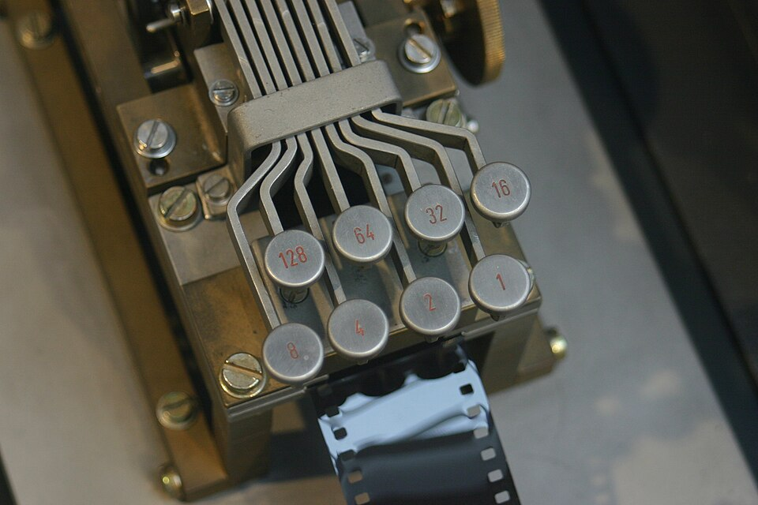


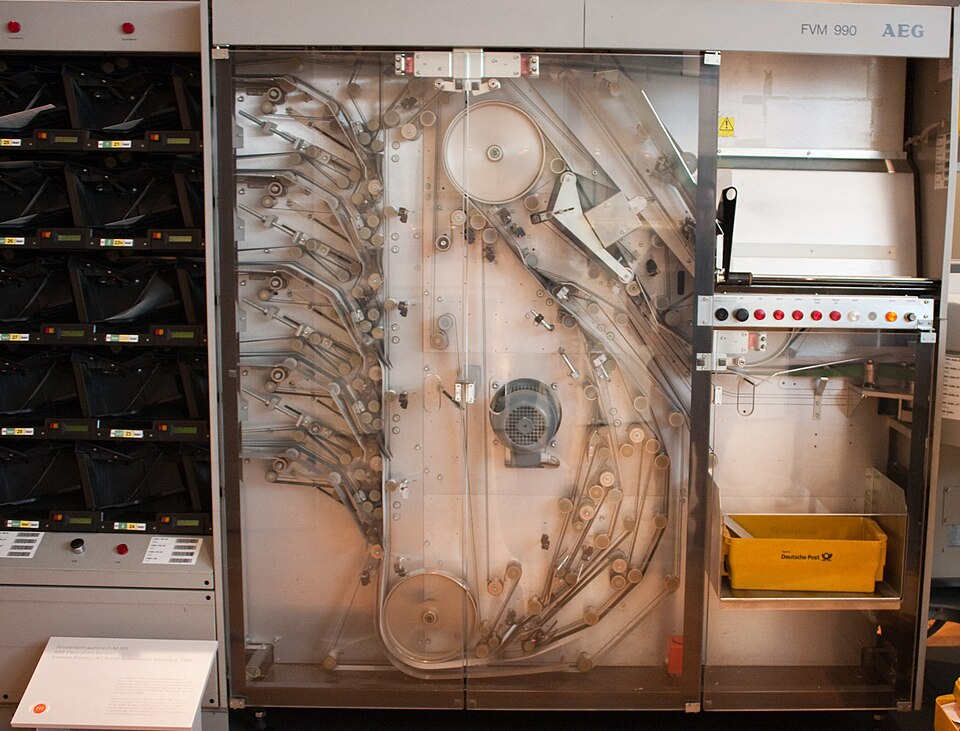
.jpg){kind=link}

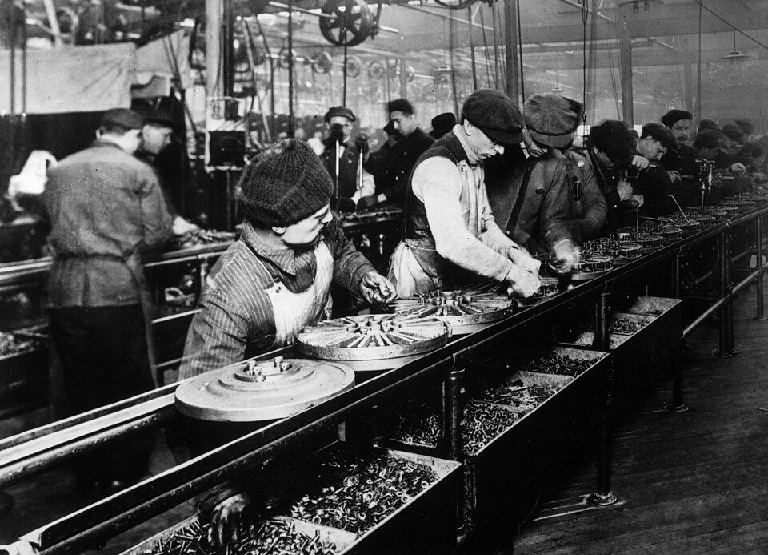


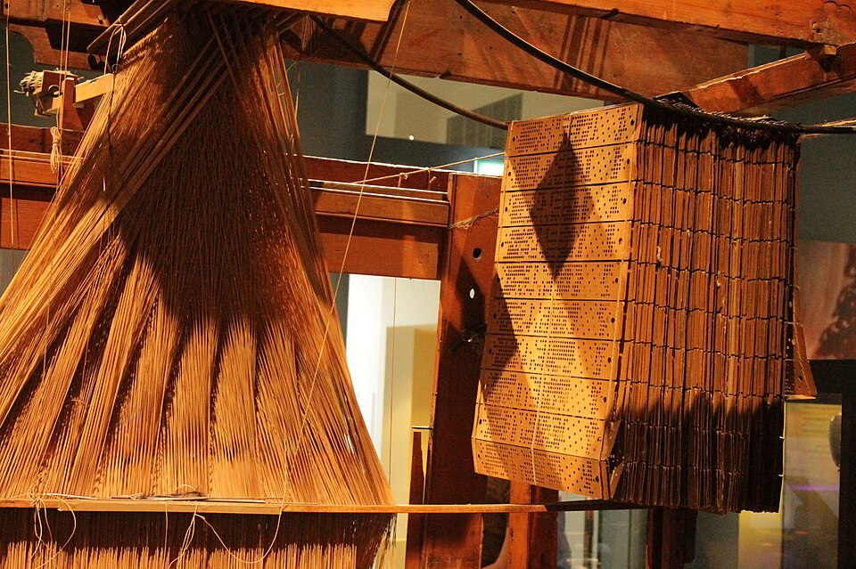


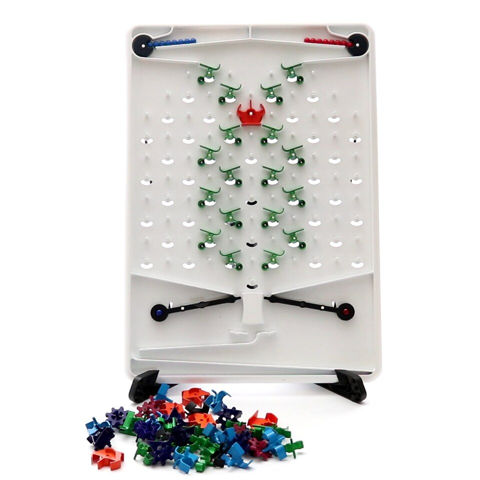


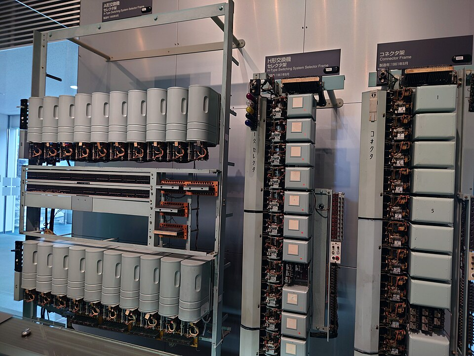

Real-world precedents
- Zuse Z1 (1936–38). Logic from sliding sheet-metal plates at about 1 Hz, with 22-bit floating point and 16 words of memory, weighing about a tonne. A replica was built in 1989 and is in Berlin 41.
- Railway interlocking (from 1843; Saxby's patent in 1856). Locking bars physically stop conflicting levers from moving: logic in steel 42.
- Relay ladder logic and the PLC. GM's Hydra-Matic division asked for a replacement for relay panels in 1968, and the Modicon 084 followed in 1969. Ladder diagrams were drawn to look like relay schematics 43.
- Turing Tumble. Marbles flip bits; an extended version of the board was proven Turing complete 44.
- Factorio. Combinators add one tick of delay each 19, and players invented the "main bus" layout to keep big factories readable 45.
Misconception risk: "reading a signal uses it up." That is what happens when crates are the signal, as in Factorio and shapez: reading consumes it, fan-out needs duplicators, and belts back up. Real wires do none of this.
Mitigation: a running belt is the level, crates are decoration, and wires never queue.
Glow Reef (organic)
A bioluminescent night garden on a reef. Everything is grown, but roots are trained flat along a trellis (espalier) so routing stays straight. Use one organism family per scale: roots and hyphae for wires, polyps and fungi for gates, comb and pods for memory, the tide for the clock. Mixing coral, mycelium and hive at the same scale turns into soup.
- Abyss
base ·#0F1E2C - Bark
base ·#5A4632 - Pale root
routing ·#E6D9BF - Coral
logic ·#E0736A - Moss
arithmetic ·#6E8B3D - Honey
storage ·#E2A23B - Tide violet
timing ·#7B62C9 - Glow cyan
signal = 1 (only glowing colour) ·#7CF5E0
How it answers the four questions
- 1 and 0
- A root glows (1) or is dark (0). Brighter ripples only show a change passing.
- NOT's supply
- A nutrient vein from the sunlit canopy runs along the north edge, with a feeder root to every polyp. A NOT glows from its feeder unless its input inhibits it. In biology NOT really is repression: Cello's genetic gates are built from repressors 46.
- Ground
- Sediment along the south edge. Glow fades unless fed, so an unconnected input visibly withers, which is a way to teach floating inputs.
- Fan-out
- Hyphae branch freely, but each branch dilutes the glow, so you add a Spore Lamp.
- Delay
- Growth and diffusion, compressed into ticks. Real chemical "wires" between bacteria take hours 47. Long roots are slow.
- Clock
- A pulsing Lantern Jelly in a tide pool feeds violet tide channels. Only storage samples them.
- Rule
- Once placed, roots never grow or thicken. Real slime mould reinforces its busiest tubes 48; the game must not, or circuits will seem to learn.
Building ladder
| Category | Part | NAND | Building | What it looks like |
|---|---|---|---|---|
| Logic | NOT | 1 | Shy Polyp | Single polyp with a glowing tip on a feeder root. Glows unless inhibited. |
| Logic | NAND | 1 | Reef Polyp | Clusters of identical coral heads: many identical units, one universal block. |
| Logic | AND | 2 | Twin-root Mushroom | Fruits only when fed by two hyphae. |
| Logic | OR | 3 | Moss Cushion | Moss pad fed by two roots. |
| Logic | XOR | 4 | Rival Blooms | Two blooms on one stem that inhibit each other. |
| Routing | Wire | — | Glow Root | Pale root trained flat along a trellis. |
| Routing | Fan-out junction | — | Root Knot | Thick branching node where the glow divides. |
| Routing | Buffer | 2 | Spore Lamp | Mushroom that re-emits the glow (+1 tick). |
| Routing | Crossing | — | Living Root Bridge | Root arching over another, with no connection. |
| Routing | 2:1 mux | 4 | Ant Fork | Trail fork with a pheromone marker on the chosen branch. |
| Routing | Bus | — | Rhizomorph Cord | Braided bundle of hyphae, one strand per bit. |
| Arithmetic | Half adder | 5 | Twin Seedpod | Two-chambered pod: Sum and Carry. |
| Arithmetic | Full adder | 9 | Brood Chamber | Rounded termite chamber. |
| Arithmetic | 4-bit ripple adder | 36 | Coral Ridge | Four chambers along a ridge, the carry glowing from one to the next. |
| Arithmetic | ALU | ≈140 | Termite Cathedral | Tall vented mound whose cap colour shows the operation. |
| Storage | SR latch | 2 | Snap Pod | Snaps open (set) and stays open until shut (reset). |
| Storage | D flip-flop | 6–9 | Tide Clam | Opens only on the tide. |
| Storage | Register (per bit) | 10–13 | Lotus Pod | Seed head with four to eight cells in a row. A glowing seed is a 1. |
| Storage | RAM (16 × 4) | ≈1,000 | Honeycomb | Hex grid of cells with a worker "crane" that finds the address. |
| Timing | Clock | — | Lantern Jelly | Large pulsing jelly in a tide pool. |
Inspiration
No strong organic voxel game turned up. Cloud Gardens is low-poly, and Block'hood (above) is the nearest voxel ecology game.


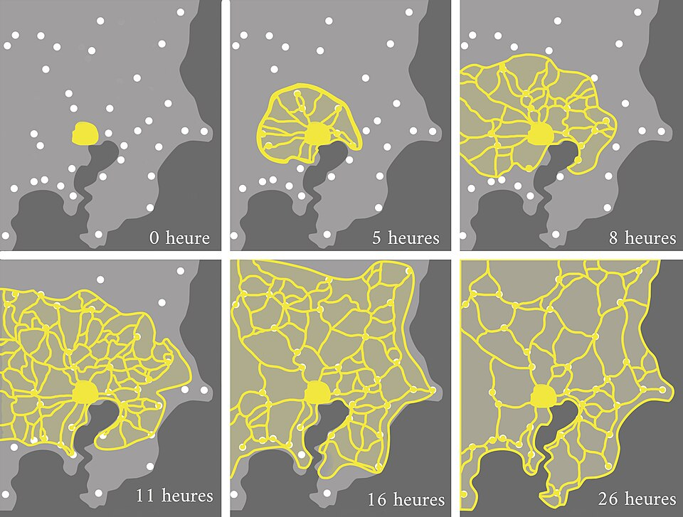


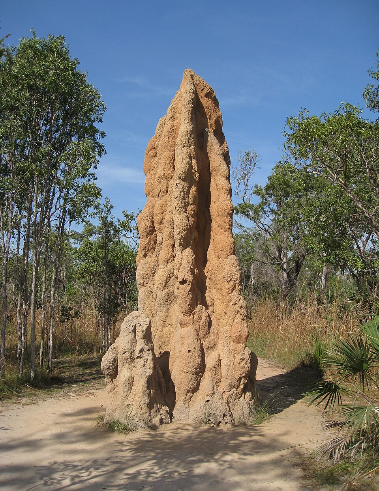


Real-world precedents
- Bacterial NOR gates with chemical wires (Tamsir, Tabor and Voigt, Nature, 2011). Each gate was a separate E. coli strain and signalling molecules were the wires. Every two-input function, including XOR, was built by arranging colonies in space 47. This is the closest real case of layout as circuit.
- Cello (2016) compiles a hardware description (Verilog) into DNA. Of 60 circuits, 45 were correct in every output state 46.
- Slime mould. Adamatzky (2010) built AND and OR gates from Physarum, with a half adder shown only in simulation 49. Tero et al. (2010) grew a network that matched Tokyo's railways 48.
- Fungal gates. Roberts and Adamatzky (2022) found many-input Boolean functions in oyster-mushroom mycelium 50.
- Honeybee stop signals. Scouts inhibit rival scouts so the swarm doesn't deadlock 51. Cross-inhibition is how an SR latch works.
- The Venus flytrap counts the electrical signals that touches trigger 52.
Misconception risk: "circuits grow, adapt and learn, and behave fuzzily." Also, this theme's source domain (inhibition and repression) is the least familiar of the three, and an analogy only helps when people already understand its source.
Mitigation: growth happens only at build time, there are exactly two glow levels, and thresholds are fixed.
Other themes, in brief
The first research pass turned up three more themes. They map more faithfully to electricity, but for now they get a card each.

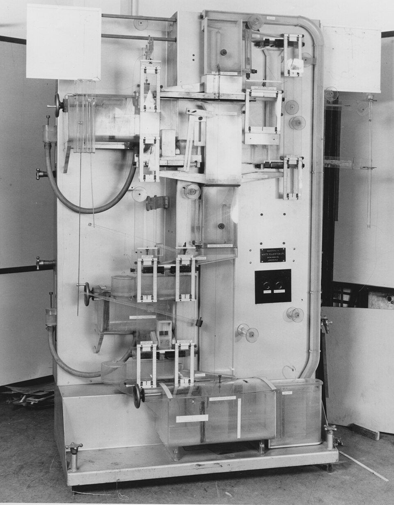
.jpg){kind=link}
Waterworks
Signal = water pressure, wire = pipe, NOT = a pump fed from a reservoir main, latch = a tank that refills itself, clock = a water wheel. The strongest physical fit: real fluidic gates exist, and water explains supply, pressure drop on fan-out and fill-time delay. The risk is that it suggests flowing current, when logic is about levels.

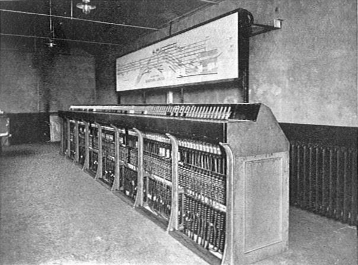
.jpg){kind=link}
Railway
Signal = a train on the track, gate = a signal box, memory = a loop siding, clock = the timetable bell. Great for delay, critical paths, contention and buses. Weak on fan-out: a train can't split in two.

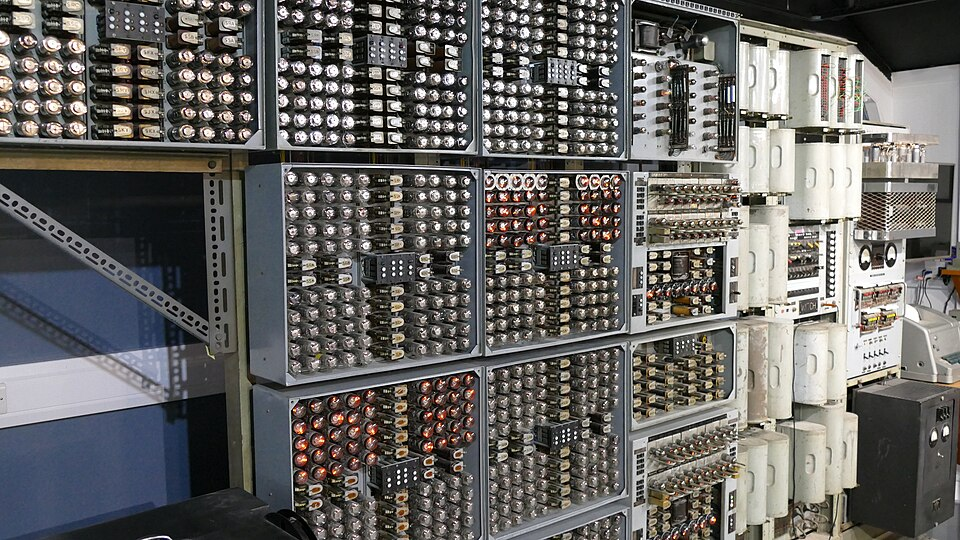

Neon power grid
Signal = current, gate = a substation, memory = a window that stays lit, clock = a lighthouse sweep. The most electrically faithful, but it adds the least, because the metaphor is nearly the thing itself.
The case against
The two choices made so far, symbolic buildings and the three less electrically faithful themes, are the two the research flags as riskiest. Here is the strongest case against them.
- The theme becomes decoration or a weak analogy. If the layout carries the schematic, the theme is decoration competing for attention. If the theme carries meaning, it is the weaker analogy.
- Decoration usually costs a little. Across studies, interesting but irrelevant extras ("seductive details") lower learning on average: d = 0.30 for retention across 34 studies and d = 0.48 for transfer across 21. Study by study, though, only 11 of 39 fully showed the effect, 13 were mixed and 15 found none. A 2020 meta-analysis of 58 papers put the cost at g ≈ −0.37 to −0.41 53.
- An analogy only helps if people already know its source. In Gentner and Gentner's study, the water model failed on batteries because people didn't understand reservoirs in series 34. Lit lanes pass this test, line shafts are doubtful, and inhibition and repression fail it.
- The best city evidence is about something else. CodeCity's result (41 participants) came from experienced developers navigating existing code, measured by the tool's own authors 3. That is not novices learning a formal notation. Memory palaces help people memorise lists (g = 0.65 across 13 trials, with a high risk of bias), which is memorising, not understanding 54.
- Concrete examples can block transfer. Whether concrete examples help or hurt the move to abstract notation is contested 55. Evidence that games teach digital logic is thin, mostly single-group before-and-after tests and self-reports 56.
In its favour: symbolic buildings make the layout the fixed part, so themes can be swapped and compared cheaply. And building the content into the core mechanic, rather than wrapping it in a theme, has some support 57.
Risks
| Risk | Likelihood | Impact | Mitigation |
|---|---|---|---|
| Scope: 3 themes × about 20 building kits × lit and unlit states | High | High | Ship one theme first. |
| Voxel buildings unreadable when zoomed out | Medium | High | Silhouette first, roof colour, districts collapse into blocks. |
| About 1,300 NAND lots are tedious to place and read | High | Medium | Encapsulation: a finished district becomes one block. |
| An animated figure for every signal change slows the game | Medium | Medium | Animate only on change, with less detail at a distance. |
| Players skip the overlay and never carry it over to real schematics | Medium to high | High | Puzzles answered in schematic or truth-table form; the slider. |
| Two buildings driving one street, or players reading districts as wiring | Medium | Medium | One driver per street; the overlay shows true connections across walls. |
What would have to be true
- The city and the schematic are exactly equivalent, so the overlay never lies.
- The rule that a signal is a level holds in every theme.
- Each theme's source domain is already familiar to players.
- Players regularly translate what they see into schematic form.
- One theme's art fits a small budget.
- Most important: after playing, people read unseen standard schematics faster or more accurately than people who played NandGame or Digital Logic Sim.
What to try next, cheapest first
- Paper city (1 day). Draw the same 4-bit adder as a schematic and as each theme's map. Have five people think aloud while tracing 0101 + 0011, and record time and errors.
- Misconception probes (same session). Six questions: fan-out, NOT's supply, two drivers on one street, what the clock does, unconnected inputs, and delay against chain length.
- One-week transfer check. Show an unseen multiplexer or SR-latch schematic and ask what it does.
- Slider prototype (2–3 days). A flat 2D HTML version of the city-to-schematic slider. Log how often people use it.
- Art test. One category kit per theme in MagicaVoxel, a day each. Check it at three zoom levels and through a colour-blindness simulator.
- Simulation test. A 1,300-gate NAND simulation in JavaScript that only updates gates when an input changes.
Open questions
- Level or token: should the signal be a lit lane (recommended) or a runner? The misconception probes would tell.
- Should footprint really grow with NAND cost, or would a 1,000-lot RAM quarter dwarf everything else?
- What should feedback lanes look like?
- At what zoom do NAND houses collapse into blocks?
- Should the schematic view keep the city's geometry, or straighten it like Beck's map?
- For Glow Reef: one organism family throughout, or one per scale?
Sources
- Inquirer Technology, "Computer chip close-ups reminiscent of big cities" (Christoph Morlinghaus photographs). technology.inquirer.net/51259/computer-chip-close-ups-reminiscent-of-big-cities
- Centre for Computing History, "The Megaprocessor". www.computinghistory.org.uk/det/43063/The-Megaprocessor
- Wettel, Lanza & Robbes (2011), "Software Systems as Cities: A Controlled Experiment", ICSE 2011. 2011.icse-conferences.org/content/software-systems-cities-controlled-experiment.html
- Turing Complete on Steam (LevelHead). store.steampowered.com/app/1444480
- Logic World on Steam (Mouse Hat Games). store.steampowered.com/app/1054340
- Voxel Tycoon on Steam. store.steampowered.com/app/732050
- Software Engineering Daily (2025), "Teardown and Voxel-Based Rendering with Dennis Gustafsson". softwareengineeringdaily.com/2025/01/02/teardown-and-voxel-based-rendering-with-dennis-gustafsson
- Block'hood on Steam (Plethora Project). store.steampowered.com/app/416210
- MagicaVoxel (ephtracy). ephtracy.github.io
- Mini Metro on Steam (Dinosaur Polo Club). store.steampowered.com/app/287980
- Daniel Bali (2019), "Cities: Skylines is Turing Complete". medium.com/@balidani/cities-skylines-is-turing-complete-e5ccf75d1c3a
- OSnews (17 July 2019), "Cities: Skylines is Turing complete". www.osnews.com/story/130333/cities-skylines-is-turing-complete
- ASEE 2024 Annual Conference paper on using Turing Complete in digital-logic courses. peer.asee.org/45615
- Hackaday (2018), "Build a fun CPU in your browser" (NandGame). hackaday.com/2018/08/20/build-a-fun-cpu-in-your-browser
- Sebastian Lague, Digital Logic Sim (GitHub). github.com/SebLague/Digital-Logic-Sim
- Oxygen Not Included wiki, "Logic gates". oxygennotincluded.wiki.gg/wiki/Logic_gates
- Minecraft wiki, "Redstone Torch". minecraft-archive.fandom.com/wiki/Redstone_Torch
- PCWorld, "8-bit computer processor built in Minecraft can run its own games" (CHUNGUS 2). www.pcworld.com/article/559794/8-bit-computer-processor-built-in-minecraft-can-run-its-own-games.html
- Factorio Friday Facts #88 (combinators). factorio.com/blog/post/fff-88
- shapez 2 wiki, "OR Gate". shapez2.wiki.gg/wiki/OR_Gate
- Wikipedia, "Robot Odyssey". en.wikipedia.org/wiki/Robot_Odyssey
- Wikipedia, "Circuit diagram" (layout conventions). en.wikipedia.org/wiki/Circuit_diagram
- Wikipedia, "The Image of the City" (Kevin Lynch, 1960). en.wikipedia.org/wiki/The_Image_of_the_City
- Oxygen Not Included wiki, "Guide/Automation". oxygennotincluded.wiki.gg/wiki/Guide/Automation
- Cities: Skylines wiki, "Info views". skylines.paradoxwikis.com/Info_views
- Wikipedia, "Tube map" (Harry Beck's 1931/33 diagram). en.wikipedia.org/wiki/Tube_map
- Fyfe, McNeil, Son & Goldstone (2014), "Concreteness fading in mathematics and science instruction: a systematic review", Educational Psychology Review. doi.org/10.1007/s10648-014-9249-3
- Ainsworth (2006), "DeFT: A conceptual framework for considering learning with multiple representations". nottingham-repository.worktribe.com/output/23577631/deft-a-conceptual-framework-for-considering-learning-with-multiple-representations
- Wikipedia, "Rent's rule". en.wikipedia.org/wiki/Rent%27s_rule
- Lanzerotti, Fiorenza & Rand (2005), on E. F. Rent's work and Rent exponents by chip type, IBM Journal of R&D. ibm1401.computerhistory.org/Pics2/RentsRule1401-Lanzerotti-IBM2005.pdf
- Tversky (1992), "Distortions in cognitive maps", Geoforum. www.tc.columbia.edu/faculty/bt2158/faculty-profile/files/1992_Tversky_Distortionsincognitivemaps.pdf
- Wikipedia, "NAND logic" (gate counts). en.wikipedia.org/wiki/NAND_logic
- Wikipedia, "Flip-flop (electronics)". en.wikipedia.org/wiki/Flip-flop_(electronics)
- Gentner & Gentner (1983), "Flowing Waters or Teeming Crowds: Mental Models of Electricity". groups.psych.northwestern.edu/gentner/papers/GentnerGentner83.pdf
- Wikipedia, "Byzantine beacon system". en.wikipedia.org/wiki/Byzantine_beacon_system
- Wikipedia, "Semaphore line" (Chappe telegraph). en.wikipedia.org/wiki/Semaphore_line
- Wikipedia, "Exchequer". en.wikipedia.org/wiki/Exchequer
- Hackaday (2024), "Fictional Computers: The Three-Body Problem". hackaday.com/2024/04/05/fictional-computers-the-three-body-problem
- Wikipedia, "Rocky's Boots". en.wikipedia.org/wiki/Rocky%27s_Boots
- Wikipedia, "Pipe marking" (ASME A13.1 colours). en.wikipedia.org/wiki/Pipe_marking
- Wikipedia, "Z1 (computer)". en.wikipedia.org/wiki/Z1_(computer)
- Wikipedia, "Interlocking" (railway signalling). en.wikipedia.org/wiki/Interlocking
- Wikipedia, "Programmable logic controller". en.wikipedia.org/wiki/Programmable_logic_controller
- Wikipedia, "Turing Tumble". en.wikipedia.org/wiki/Turing_Tumble
- Factorio wiki, "Tutorial:Main bus". wiki.factorio.com/Tutorial:Main_bus
- Nielsen et al. (2016), "Genetic circuit design automation" (Cello), Science. pubmed.ncbi.nlm.nih.gov/27034378
- Tamsir, Tabor & Voigt (2011), "Robust multicellular computing using genetically encoded NOR gates and chemical 'wires'", Nature. pubmed.ncbi.nlm.nih.gov/21150903
- Tero et al. (2010), "Rules for biologically inspired adaptive network design", Science. doi.org/10.1126/science.1177894
- Adamatzky (2010), "Slime mould logical gates" (arXiv:1005.2301). arxiv.org/abs/1005.2301
- Roberts & Adamatzky (2022), "Mining logical circuits in fungi", Scientific Reports. pmc.ncbi.nlm.nih.gov/articles/PMC9508188
- ScienceDaily (2011), on Seeley et al., honeybee stop signals and cross-inhibition. www.sciencedaily.com/releases/2011/12/111208141942.htm
- Böhm et al. (2016), "The Venus flytrap Dionaea muscipula counts prey-induced action potentials…", Current Biology. doi.org/10.1016/j.cub.2015.11.057
- Tislar & Steelman (2021), Brain and Behavior: reports Rey (2012) and Sundararajan & Adesope (2020) seductive-details figures. pmc.ncbi.nlm.nih.gov/articles/PMC8442593
- Twomey & Kroneisen (2021), meta-analysis of the method of loci, Quarterly Journal of Experimental Psychology. journals.sagepub.com/doi/10.1177/1747021821993457
- Trninic (2020), on the concrete-vs-abstract examples debate following Kaminski et al. (2008). edrl.berkeley.edu/wp-content/uploads/2020/08/Trninic-2020-CogSci.pdf
- Example of the thin evidence on game-based logic learning: Lancaster University (2024) study. eprints.lancs.ac.uk/id/eprint/227709
- Habgood & Ainsworth (2011), "Motivating Children to Learn Effectively: Exploring the Value of Intrinsic Integration in Educational Games", Journal of the Learning Sciences 20(2). doi.org/10.1080/10508406.2010.508029
Image credits
Wikimedia Commons photos are hosted alongside this page under their own licences. Game screenshots are loaded from the publishers' store pages and remain theirs.
- die-6502.jpg: Pauli Rautakorpi · CC BY 3.0 · Wikimedia Commons
- die-6502-breaknes.jpg: BreakNES.com · CC BY-SA 4.0 · Wikimedia Commons
- intel-4004-layout.jpg: Wolfgang Stief (photo), Pittigrilli (edit) · CC0 · Wikimedia Commons
- megaprocessor.jpg: Steve Elliott from UK · CC BY-SA 2.0 · Wikimedia Commons
- CodeCity screenshot: © Richard Wettel · CodeCity page (hotlinked)
- Turing Complete screenshot: © LevelHead · Turing Complete page (hotlinked)
- Logic World screenshot: © Mouse Hat Games · Logic World page (hotlinked)
- digi-comp-ii.jpg: Bobroswell · CC BY-SA 4.0 · Wikimedia Commons
- fluidic-and-xor.png: Joseph Fyfield, Xing Liu · Public domain · Wikimedia Commons
- Voxel Tycoon screenshot: © Voxel Tycoon · Voxel Tycoon page (hotlinked)
- Teardown screenshot: © Tuxedo Labs · Teardown page (hotlinked)
- Block'hood screenshot: © Plethora Project · Block'hood page (hotlinked)
- MagicaVoxel screenshot: © ephtracy · MagicaVoxel page (hotlinked)
- Townscaper screenshot: © Oskar Stålberg · Townscaper page (hotlinked)
- Mini Metro screenshot: © Dinosaur Polo Club · Mini Metro page (hotlinked)
- veloren-village.png: Veloren team and community; screenshot by PantheraLeo1359531 · GPLv3 · Wikimedia Commons
- Stonehearth screenshot: © Radiant Entertainment · Stonehearth page (hotlinked)
- Castle Story screenshot: © Sauropod Studio · Castle Story page (hotlinked)
- Tiny Glade screenshot: © Pounce Light · Tiny Glade page (hotlinked)
- castle-rushen-portcullis.jpg: Manxruler · CC BY-SA 3.0 · Wikimedia Commons
- market-cross.jpg: Chris McAuley · CC BY-SA 2.0 · Wikimedia Commons
- chappe-tower.jpg: Erixsen · CC BY-SA 3.0 · Wikimedia Commons
- lavenham-guildhall.jpg: Jonathan Thacker · CC BY-SA 2.0 · Wikimedia Commons
- hereford-chained-library.jpg: Stuart Wilding · CC BY-SA 2.0 · Wikimedia Commons
- monpazier-aerial.jpg: Mairiemonpazier · CC BY-SA 4.0 · Wikimedia Commons
- nordlingen-aerial.jpg: Bayerische Vermessungsverwaltung – www.geodaten.bayern.de · CC BY-SA 3.0 · Wikimedia Commons
- bruges-belfry.jpg: Adiel lo · CC BY-SA 3.0 · Wikimedia Commons
- wells-clock.jpg: DeFacto · CC BY-SA 4.0 · Wikimedia Commons
- FOUNDRY screenshot: © Channel 3 Entertainment / Paradox · FOUNDRY page (hotlinked)
- Infinifactory screenshot: © Zachtronics · Infinifactory page (hotlinked)
- zuse-z1.jpg: Alex J. Lowry from Scotland · CC0 · Wikimedia Commons
- post-sorting.jpg: Milestoned from Deutschland(Germany) · CC BY 2.0 · Wikimedia Commons
- ford-line-1913.jpg: Unknown author · Public domain · Wikimedia Commons
- jacquard-loom.jpg: Stephencdickson · CC BY-SA 4.0 · Wikimedia Commons
- turing-tumble.jpg: Pgboswell · CC BY-SA 4.0 · Wikimedia Commons
- high-bay-warehouse.jpg: Gilgen Logistics AG · CC BY-SA 4.0 · Wikimedia Commons
- strowger-exchange.jpg: Darklanlan · CC BY 4.0 · Wikimedia Commons
- Cloud Gardens screenshot: © Noio · Cloud Gardens page (hotlinked)
- physarum-network.jpg: Tim Tim (VD fr) · CC BY-SA 4.0 · Wikimedia Commons
- physarum.jpg: HelenGinger · CC BY-SA 3.0 · Wikimedia Commons
- hyphae.jpg: TheAlphaWolf · CC BY-SA 3.0 · Wikimedia Commons
- root-bridge.jpg: PJeganathan · CC BY-SA 4.0 · Wikimedia Commons
- panellus.jpg: Ylem · Public domain · Wikimedia Commons
- coral-outcrop.jpg: Toby Hudson · CC BY-SA 3.0 · Wikimedia Commons
- termite-mound.jpg: J Brew · CC BY-SA 2.0 · Wikimedia Commons
- lotus-pod.jpg: Krishna satya 333 · CC0 · Wikimedia Commons
- honeycomb.jpg: Waugsberg · CC BY-SA 3.0 · Wikimedia Commons
- phillips-machine.jpg: LSE Library · No restrictions · Wikimedia Commons
- signal-frame-1928.jpg: Andy Dingley (scanner) · Public domain · Wikimedia Commons
- harwell-dekatron.jpg: BadgersCP · CC0 · Wikimedia Commons